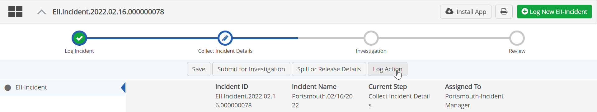
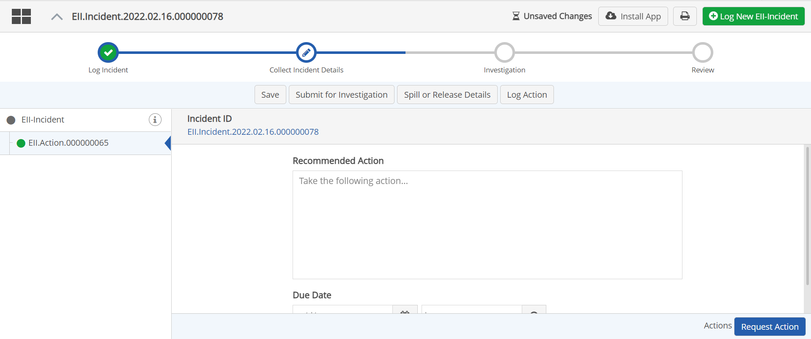
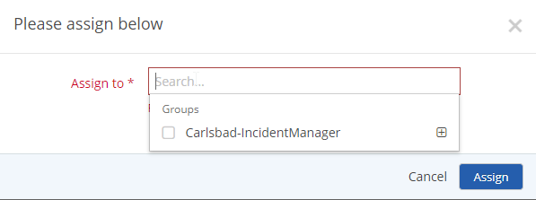
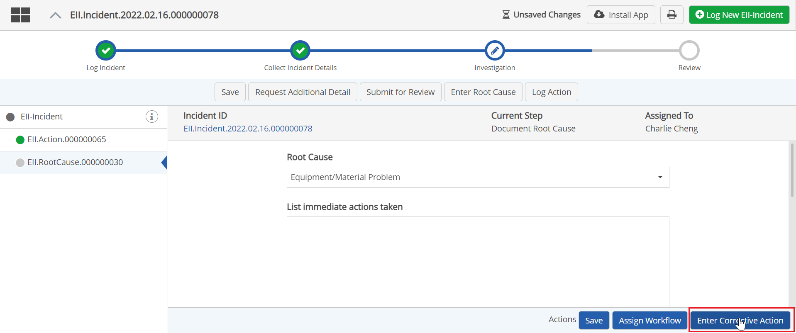
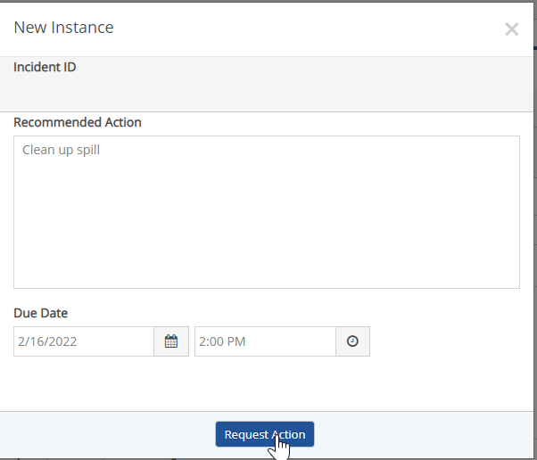
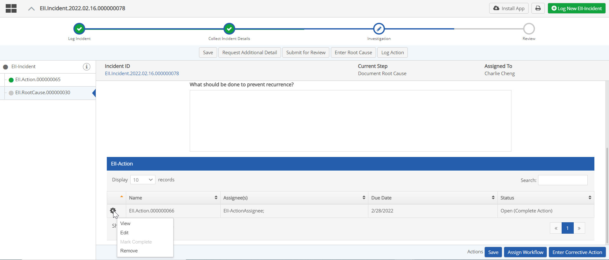

Actions may be created at any step in which the Create (or Request) Action button is available (label may vary).
Actions created from the primary App workflow are child workflows and are displayed as tabs from the main record.
Actions created for a secondary process workflow are displayed inline on the tab for that sub-process. See Sub-Processes.
To create an Action from the primary workflow:
Select the Create Action button (wording may vary).

A new tab will be displayed with the form for creating the action.
Enter the recommended action, along with a due date and time, and any other fields that are requested.

Click Assign to assign the action.
In the Assign dialog, select the assignee. Click in the box to see available assignees or search for a user or group.

Create a related action for a subprocess
To create a related action for a sub-process:


Actions (or other related workflows) initiated from a sub-process are displayed on the tab for the associated sub-process.
To view or edit an action for a subprocess, click the gear icon in the table next to the action and choose the appropriate option from the drop-down list.
